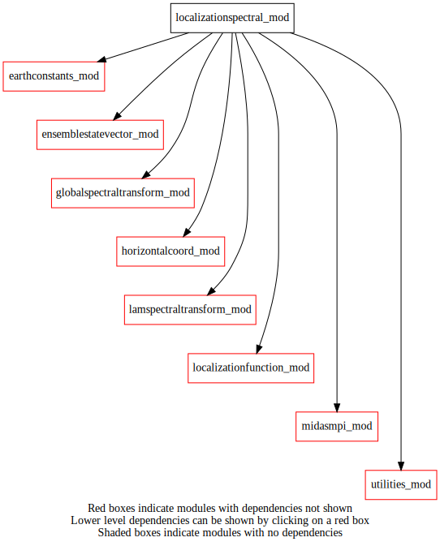

Dependency Diagrams:
 Direct Dependency Diagram¶
Reverse Dependency Diagram¶
Description
MODULE localizationSpectral_mod (prefix=’lsp’ category=’2. B and R matrices’)
- Purpose
To compute localized 3D gridpoint amplitude fields for each ensemble member from a given (1D) control vector of SPECTRAL ELEMENTS
Quick access
- Variables
- Routines
globalspectralhloc(),globalspectralhlocad(),lamspectralhloc(),lamspectralhlocad(),lsp_check(),lsp_expandtompiglobal(),lsp_expandtompiglobal_r4(),lsp_finalize(),lsp_lsqrt(),lsp_lsqrtad(),lsp_reducetompilocal(),lsp_reducetompilocal_r4(),lsp_setup(),setupglobalspectralhloc(),setuplamspectralhloc(),setuplocalizationmatrices()Needed modules
midasmpi_mod: MODULE midasMpi_mod (prefix=’mmpi’ category=’8. Low-level utilities and constants’)
utilities_mod: MODULE utilities_mod (prefix=’utl’ category=’8. Low-level utilities and constants’)
globalspectraltransform_mod: MODULE globalSpectralTransform_mod (prefix=’gst’ category=’4. Data Object transformations’)
lamspectraltransform_mod: MODULE lamSpectralTransform_mod (prefix=’lst’ category=’4. Data Object transformations’)
localizationfunction_mod: MODULE localizationFunction_mod (prefix=’lfn’ category=’2. B and R matrices’)
horizontalcoord_mod: MODULE HorizontalCoord_mod (prefix=’hco’ category=’7. Low-level data objects’)
earthconstants_mod: MODULE earthConstants_mod (prefix=’ec’ category=’8. Low-level utilities and constants’) Prefixes: ec_ (Earth constants), for miscellaneous values from diverse sources
ensemblestatevector_mod: MODULE ensembleStateVector_mod (prefix=’ens’ category=’6. High-level data objects’)Types
- type localizationspectral_mod/unknown_type¶
- Type fields
% cvdim_mpiglobal [integer ]
% cvdim_mpilocal [integer ]
% dlon [real ]
% global [logical ]
% gstid [integer ]
% ilalist_mpiglobal (*) [integer ,pointer]
% ilalist_mpilocal (*) [integer ,pointer]
% initialized [logical ]
% lhorizsqrt (*,*) [real ,allocatable]
% lst [struct_lst ]
% lvertsqrt (*,*) [real ,allocatable]
% mylatbeg [integer ]
% mylatend [integer ]
% mylonbeg [integer ]
% mylonend [integer ]
% mymbeg [integer ]
% mymend [integer ]
% mymskip [integer ]
% mynbeg [integer ]
% mynend [integer ]
% mynskip [integer ]
% nens [integer ]
% nensoverdimension [integer ]
% ni [integer ]
% nj [integer ]
% nla_mpiglobal [integer ]
% nla_mpilocal [integer ]
% nlev [integer ]
% nphase [integer ]
% ntrunc [integer ]
Variables
- localizationspectral_mod/struct_lsp [public]¶
Subroutines and functions
- subroutine localizationspectral_mod/lsp_setup(hco_loc, nens, nlev, vertlocation, ntrunc, loctype, locmode, horizlengthscale1, horizlengthscale2, vertlengthscale, cvdim_out, lsp, nensoverdimension_out)¶
- Arguments
hco_loc [struct_hco ,pointer]
nens [integer ,in]
nlev [integer ,in,]
vertlocation (nlev) [real ,in]
ntrunc [integer ,in]
loctype [character ,in]
locmode [character ,in]
horizlengthscale1 [real ,in]
horizlengthscale2 [real ,in]
vertlengthscale [real ,in]
cvdim_out [integer ,out]
lsp [struct_lsp ,pointer] :: IN
nensoverdimension_out [integer ,out]
- Called from
- Call to
utl_abort(),mmpi_setup_latbands(),mmpi_setup_lonbands(),mmpi_setup_levels(),gst_setup(),lst_setup(),mmpi_setup_m(),mmpi_setup_n(),gst_ilalist_mpiglobal(),gst_ilalist_mpilocal(),lfn_setup(),setuplocalizationmatrices()
- subroutine localizationspectral_mod/setuplocalizationmatrices(lsp, horizlengthscale1, horizlengthscale2, vertlengthscale, vertlocation, localizationmode)¶
- Arguments
lsp [struct_lsp ,pointer]
horizlengthscale1 [real ,in]
horizlengthscale2 [real ,in]
vertlengthscale [real ,in]
vertlocation (lsp%nlev) [real ,in]
localizationmode [character ,in]
- Called from
- Call to
utl_abort(),setupglobalspectralhloc(),setuplamspectralhloc(),lfn_response(),utl_matsqrt()
- subroutine localizationspectral_mod/setupglobalspectralhloc(lsp, local_length)¶
- Arguments
lsp [struct_lsp ,pointer]
local_length (lsp%nlev) [real ,in]
- Called from
- Call to
gst_setup(),gst_getrmu(),lfn_response(),gst_setid(),gst_reespe(),utl_abort()
- subroutine localizationspectral_mod/setuplamspectralhloc(lsp, local_length)¶
- Arguments
lsp [struct_lsp ,pointer] :: IN
local_length (lsp%nlev) [real ,in]
- Called from
- Call to
lst_setup(),lfn_createbiperfunction(),lst_vartransform(),utl_abort()
- subroutine localizationspectral_mod/lsp_lsqrt(lsp, controlvector, ensamplitude, stepindex)¶
- Arguments
lsp [struct_lsp ,pointer] :: loop over all levels for the amplitudes
controlvector (lsp%cvdim_mpilocal) [real ,in]
ensamplitude [struct_ens ]
stepindex [integer ,in]
- Called from
- Call to
lsp_check(),globalspectralhloc(),lamspectralhloc(),ens_getonelev_r8(),gst_setid(),gst_speree_kij(),lst_vartransform()
- subroutine localizationspectral_mod/globalspectralhloc(lsp, sp_all, controlvector)¶
- Arguments
lsp [struct_lsp ,pointer]
sp_all (lsp%nla_mpilocal,lsp%nphase,lsp%nlev,lsp%nens) [real ,out]
controlvector (lsp%cvdim_mpilocal) [real ,in]
- Called from
- Call to
- subroutine localizationspectral_mod/lamspectralhloc(lsp, sp_all, controlvector)¶
- Arguments
lsp [struct_lsp ,pointer]
sp_all (lsp%nla_mpilocal,lsp%nphase,lsp%nlev,lsp%nens) [real ,out]
controlvector (lsp%cvdim_mpilocal) [real ,in]
- Called from
- Call to
- subroutine localizationspectral_mod/lsp_lsqrtad(lsp, ensamplitude, controlvector, stepindex)¶
- Arguments
lsp [struct_lsp ,pointer] :: loop over all levels for the amplitudes
ensamplitude [struct_ens ]
controlvector (lsp%cvdim_mpilocal) [real ,out]
stepindex [integer ,in]
- Called from
- Call to
lsp_check(),ens_getonelev_r8(),gst_setid(),gst_speree_kij_ad(),lst_vartransform(),globalspectralhlocad(),lamspectralhlocad()
- subroutine localizationspectral_mod/globalspectralhlocad(lsp, sp_all, controlvector)¶
- Arguments
lsp [struct_lsp ,pointer]
sp_all (lsp%nla_mpilocal,lsp%nphase,lsp%nlev,lsp%nens) [real ,in]
controlvector (lsp%cvdim_mpilocal) [real ,out]
- Called from
- Call to
- subroutine localizationspectral_mod/lamspectralhlocad(lsp, sp_all, controlvector)¶
- Arguments
lsp [struct_lsp ,pointer]
sp_all (lsp%nla_mpilocal,lsp%nphase,lsp%nlev,lsp%nens) [real ,in]
controlvector (lsp%cvdim_mpilocal) [real ,out]
- Called from
- Call to
- subroutine localizationspectral_mod/lsp_finalize(lsp)¶
- Arguments
lsp [struct_lsp ,pointer]
- Called from
- Call to
- subroutine localizationspectral_mod/lsp_reducetompilocal(lsp, cv_mpilocal, cv_mpiglobal)¶
- Arguments
lsp [struct_lsp ,pointer]
cv_mpilocal (lsp%cvdim_mpilocal) [real ,out]
cv_mpiglobal (*) [real ,in]
- Called from
- Call to
- subroutine localizationspectral_mod/lsp_reducetompilocal_r4(lsp, cv_mpilocal, cv_mpiglobal)¶
- Arguments
lsp [struct_lsp ,pointer]
cv_mpilocal (lsp%cvdim_mpilocal) [real ,out]
cv_mpiglobal (*) [real ,in]
- Called from
- Call to
- subroutine localizationspectral_mod/lsp_expandtompiglobal(lsp, cv_mpilocal, cv_mpiglobal)¶
- Arguments
lsp [struct_lsp ,pointer]
cv_mpilocal (lsp%cvdim_mpilocal) [real ,in]
cv_mpiglobal (*) [real ,out]
- Called from
- Call to
- subroutine localizationspectral_mod/lsp_expandtompiglobal_r4(lsp, cv_mpilocal, cv_mpiglobal)¶
- Arguments
lsp [struct_lsp ,pointer]
cv_mpilocal (lsp%cvdim_mpilocal) [real ,in]
cv_mpiglobal (*) [real ,out]
- Called from
- Call to
- subroutine localizationspectral_mod/lsp_check(lsp)¶
- Arguments
lsp [struct_lsp ,pointer]
- Called from
lsp_lsqrt(),globalspectralhloc(),lamspectralhloc(),lsp_lsqrtad(),globalspectralhlocad(),lamspectralhlocad(),lsp_finalize(),lsp_reducetompilocal(),lsp_reducetompilocal_r4(),lsp_expandtompiglobal(),lsp_expandtompiglobal_r4()- Call to
{kind=link}
{kind=link}